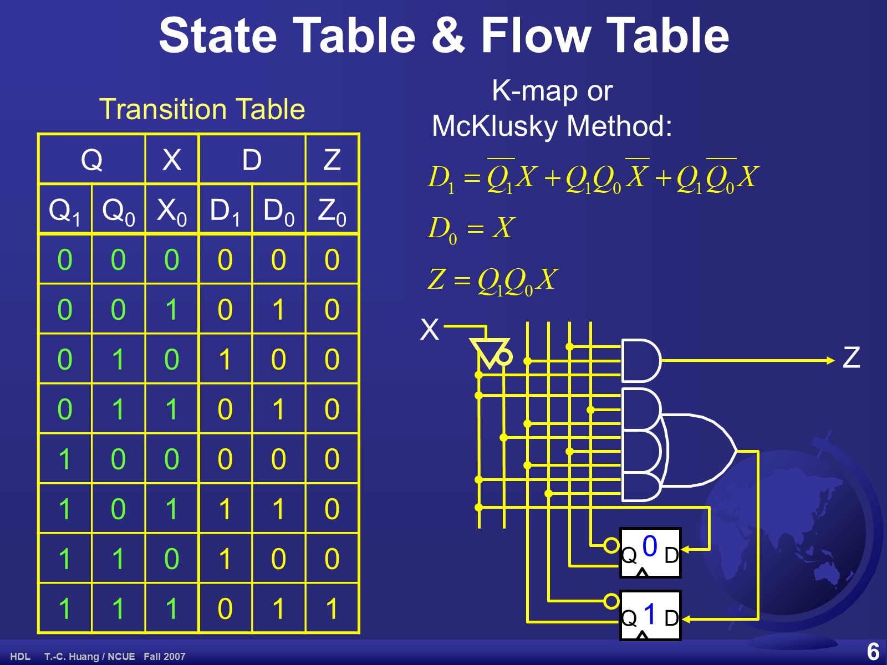
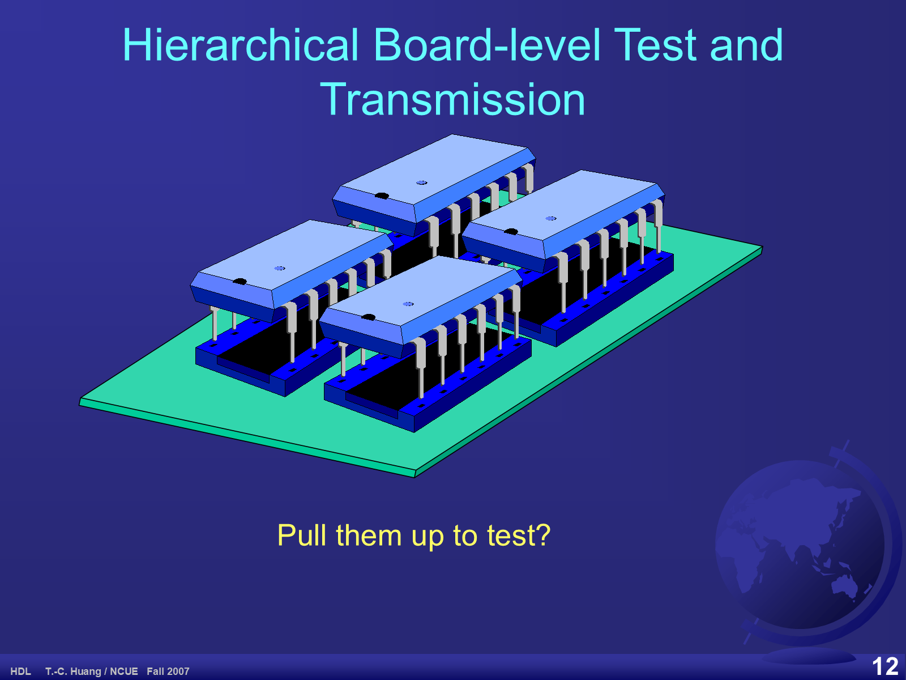
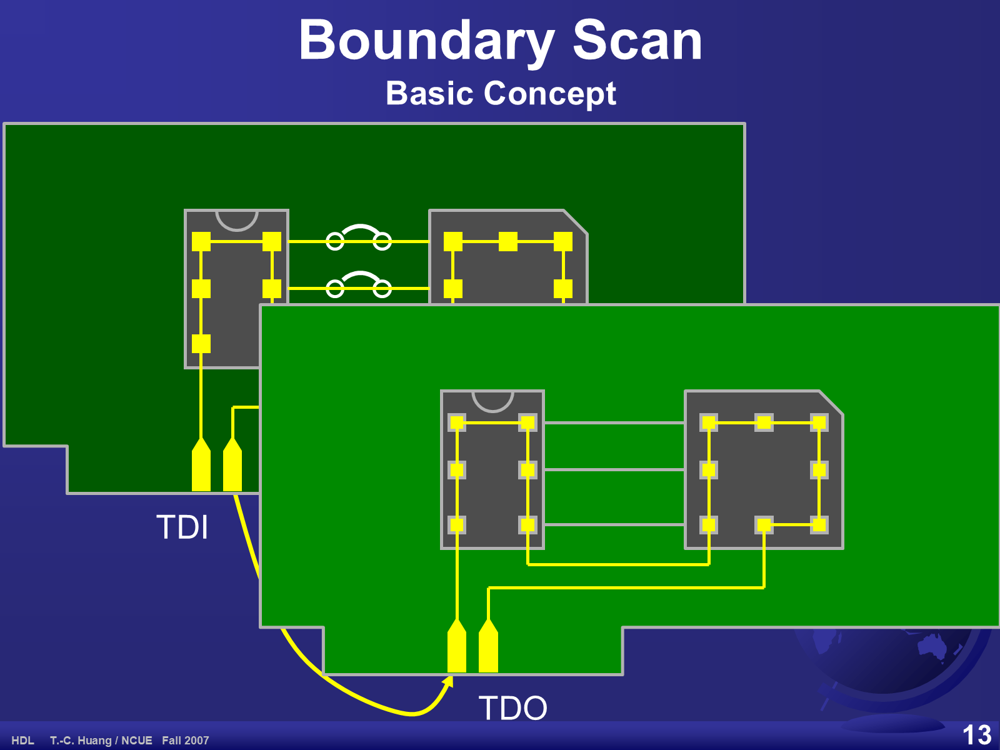
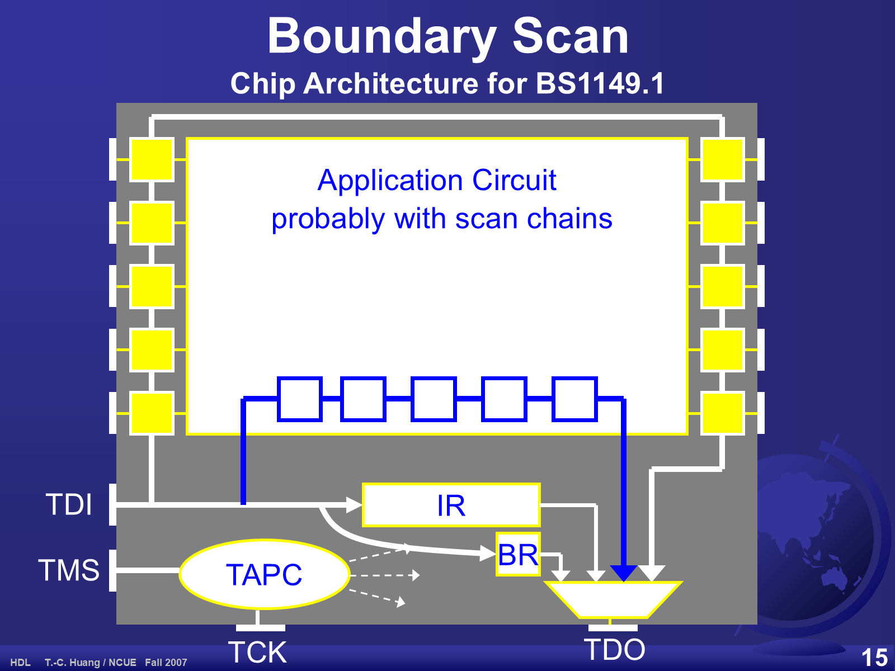
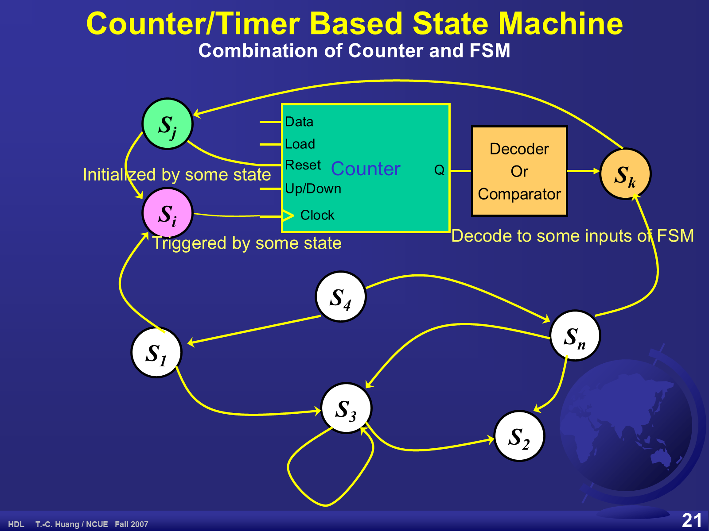

05 FSM — 有限狀態機、JTAG TAP 控制器
Mealy 與 Moore、狀態表、JTAG TAP 控制器、計數器型狀態機。原始投影片 24 張，估計閱讀 40 分鐘。
學習目標
- 用 Huffman 模型說明同步 FSM 的結構，並說出 PI／PO／PPI／PPO 四組訊號。
- 準確分辨 Mealy 與 Moore 機：輸出相依於什麼、電路結構差在哪、狀態圖怎麼標。
- 自己追蹤 1011 序列偵測器的狀態轉移，並說明為什麼它是「可重疊」的偵測器。
- 把狀態圖寫成轉移表，再寫成標準的兩段式 Verilog（現態／次態）。
- 說明 JTAG／IEEE 1149.1 邊界掃描要解決什麼問題，並讀懂 TAP 控制器的 16 狀態圖。
- 說出環形、強生、LFSR 三種移位計數器的差別與用途。
- 用「共用計數器 + 比較器」取代一長串等待狀態。
5.1 Huffman 模型
投影片 p.1–2
本章封面日期 2022/10/13，是 Lec. 05「Exam, FSM」。副標為 Single Clock, Synchronous, DFF-based（單一時脈、同步、以 D 型正反器為基礎）。
這張圖與第 01 章 §1.9 是同一張。它是整章的骨架：任何同步 FSM 都可以切成「一塊組合邏輯」加「一排正反器」。
| 縮寫 | 全名 | 符號 | 寬度 |
|---|---|---|---|
| PI | Primary Inputs（主要輸入） | X | L |
| PO | Primary Outputs（主要輸出） | Z | N |
| PPI / PS | Pseudo PI / Present State（現態） | y | M |
| PPO / NS | Pseudo PO / Next State（次態） | Y | M |
右下的方程式 State Count S ≤ 2M：M 個正反器最多編出 2M 個狀態。
5.2 常見的有限狀態機
投影片 p.3
這是一張分類表，每一項後面都只有冒號、沒有說明 — 它是本章與後續課程的索引。
| 類別 | 項目 | 本網站的對應章節 |
|---|---|---|
| Sequence Detectors 序列偵測器 | — | §5.4–§5.6（1011 密碼鎖） |
| General Counters 一般計數器 | Binary Counters、Ring Counters、Johnson Counters、Linear Feedback Shift Registers | §5.15 |
| Timed Buttons 計時按鈕 | Debouncer、Morse Codes | §5.18（Lab05） |
| Controllers 控制器 | Memory/CPU Controllers、TAPC (Test Access Port Controller, JTAG, IEEE1149.1) | §5.9–§5.14 |
5.3 Mealy 與 Moore 的分類
投影片 p.4
投影片的兩句定義（照錄）：
- Mealy Machine: The outputs are dependent on both the state and the input.（輸出同時相依於狀態與輸入。）
- Moore Machine: The outputs are dependent on only the present state.（輸出只相依於現態。）
| Mealy | Moore | |
|---|---|---|
| 輸出相依於 | 現態 與 輸入 | 只有現態 |
| 狀態圖標法 | 標在邊上，寫成 輸入/輸出 | 標在狀態圈內，邊上只標輸入 |
| 電路結構 | 一朵組合邏輯雲同時產生次態與輸出 | 兩朵雲：次態邏輯 + 輸出解碼器 |
| 反應速度 | 快（輸入變化當週期就反映在輸出） | 慢一個時脈，但輸出乾淨、不會跟著輸入抖動 |
| 通常狀態數 | 較少 | 較多（輸出不同就得分成不同狀態） |
「反應速度」與「狀態數」兩列是本網站為了複習而補充的對照，不是投影片原文；投影片只給了兩句定義與結構圖。
5.4 Mealy 範例：密碼鎖 1011
投影片 p.5
標題為 State Diagram — Example of Mealy Machine: A Lock with Password 1011。輸入 X 是一位元序列，輸出 Z 在偵測到 1011 的那個時脈變成 1。四個狀態的名稱描述「還在等什麼」：
| 狀態名稱 | 編碼 Q1Q0 | 含義 |
|---|---|---|
| Waiting for 1011 | 00 | 還沒看到密碼的任何部分 |
| Waiting for 011 | 01 | 已看到 1 |
| Waiting for 11 | 10 | 已看到 10 |
| Waiting for 1 | 11 | 已看到 101 |
互動步進器：自己餵輸入看它怎麼走
點 0 或 1 餵入一個位元，圖上會高亮目前狀態與剛走過的邊。
投影片沒有畫重置箭頭，§5.6 的 Verilog 也沒有重置埠。本步進器以 00（等 1011）為起始狀態，這是語意上最自然的起點。
這是一個可重疊 (overlapping) 的偵測器：偵測成功後回到 01 而不是 00，因為剛才那個結尾的 1 可以當成下一次密碼的開頭。試著餵 1011011 看看 — 會成功兩次。
5.5 轉移表、布林式與閘級實作
投影片 p.6
把 §5.4 的狀態圖寫成表格，就是 Transition Table（轉移表）。這張表與第 01 章 §1.9 的狀態表是同一張。
| Q1 | Q0 | X0 | D1 | D0 | Z0 |
|---|---|---|---|---|---|
| 0 | 0 | 0 | 0 | 0 | 0 |
| 0 | 0 | 1 | 0 | 1 | 0 |
| 0 | 1 | 0 | 1 | 0 | 0 |
| 0 | 1 | 1 | 0 | 1 | 0 |
| 1 | 0 | 0 | 0 | 0 | 0 |
| 1 | 0 | 1 | 1 | 1 | 0 |
| 1 | 1 | 0 | 1 | 0 | 0 |
| 1 | 1 | 1 | 0 | 1 | 1 |
右欄標題為 K-map or McKlusky Method:，印出三個式子：
D1 = Q1'·X + Q1·Q0·X' + Q1·Q0'·X
D0 = X
Z = Q1·Q0·XD1 的第一項 Q1'·X 與同頁的表格不符。表上 D1=1 只出現在 Q1Q0X = 010、101、110，而 Q1'·X 會讓 001 與 011 也變成 1。D0 與 Z 都正確。這與第 01 章 §1.9 是同一處錯誤。
由表反推的正確式子：
D1 = Q1'·Q0·X' + Q1·Q0·X' + Q1·Q0'·X = Q0·X' + Q1·Q0'·X
推測第一項原本要寫的是 Q1'·Q0·X'。狀態圖、轉移表與 §5.6 的 Verilog 三者互相一致，只有這個印出來的第一項是錯的。
頁面下方是閘級實作：X 經反相器產生 X'，接著是一個 AND／OR 交叉矩陣（垂直的乘積線與水平的輸入線以點連接）驅動四個 AND 閘 — 最上面那個直接輸出 Z，另外三個匯入 OR 閘再送到正反器的 D 端；兩個 D 型正反器的 Q／Q' 再回授到矩陣。

5.6 Mealy 的 Verilog 寫法
投影片 p.7
module Lock(Clk, X, Z)
input Clk, X;
output Z;
reg Z;
parameter W1011=2’b00, W011=2’b01, W11=2’b10, W1=2’b11;
reg [1:0] Present_State, Next_State;
always@(posedge Clk)
Present_State = Next_State;
always@(X or Present_State) begin
Next_State = Present_State;
case(Present_State)
W1011 : Next_State = X ? W011 : W1011;
W011 : Next_State = X ? W011 : W11;
W11 : Next_State = X ? W1 : W1011;
W1 : Next_State = X ? W011 : W11;
default: Next_State = W011;
endcase
case(Present_State)
W1 : Z = X ? 1 : 0;
default: Z = 0;
endcase
end // always
endmodule這是標準的兩段式寫法，值得背下來：
- 第一個
always@(posedge Clk)只做一件事：把次態搬進現態（這就是正反器）。 - 第二個
always@(X or Present_State)是組合邏輯：用case算次態，再用另一個case算輸出。
第二個 case 只有 W1 這一項寫 Z = X ? 1 : 0; — 輸出同時看狀態與輸入，這正是 Mealy 的定義，也正好對應狀態圖上唯一那條 1/1 的邊。
三處原文問題：模組首行 module Lock(Clk, X, Z) 少了分號；標題副標寫「Password 1101」但狀態名稱與圖都是 1011（副標是錯字）；default: Next_State = W011; 會讓未知狀態跳到 W011 而不是閒置狀態 W1011，不太合理。照原文保留。
除此之外，case 的內容與 §5.4 的狀態圖完全一致，可以逐行對照驗證。
5.7 Moore 範例：Recent Ones
投影片 p.8–9
這台機器數「最近兩個輸入位元裡有幾個 1」。每個狀態圈被一條橫線切開：上半是狀態名稱，下半是 Moore 輸出；邊上只標輸入值，沒有斜線輸出 — 這就是 Moore 機的畫法。
| 狀態 | 輸出 | 含義（最近兩個輸入位元） |
|---|---|---|
S0 | 0 | 00 — 零個 1 |
S1 | 1 | 01 — 一個 1 |
S2 | 1 | 10 — 一個 1 |
S3 | 2 | 11 — 兩個 1 |
互動步進器
點 0 或 1 餵入一個位元。
看穿這台機器的本質：它就是一個 2 位元移位暫存器 — 次態 =（前一個位元, 新位元），而輸出就是這兩個位元的 1 的個數。所以 §5.8 的輸出解碼器只是一個加法器。
p.9 是同一台機器的 Huffman 模型結構圖（整頁幾乎沒有文字，只有一個 +）：上面一朵雲是次態邏輯，中間兩個小方塊是兩個狀態正反器，下面另一朵雲裡有一個粗體 + — 就是把兩個狀態位元相加得到輸出 0/1/2 的 Moore 解碼器。
5.8 Moore 的 Verilog 寫法
投影片 p.10
module Recent1s(Clk, X, Z)
input Clk, X;
output [1:0] Z;
reg [1:0] Z;
reg [1:0] Present_State, Next_State;
always@(posedge Clk)
Present_State = Next_State;
always@(X or Present_State) begin
Next_State = Present_State;
case(Present_State)
0 : Next_State = X ? 1 : 0;
1 : Next_State = X ? 2 : 1;
2 : Next_State = X ? 1 : 0;
3 : Next_State = X ? 2 : 1;
default: Next_State = 0;
endcase
end // always
assign Z = Present_State[1] + Present_State[0];
endmodule投影片有一個箭頭指著最後那行 assign，標註 Moore decoder from present state to output（由現態到輸出的 Moore 解碼器）。
這一行就是 Mealy 與 Moore 在程式上的差別：輸出用 assign 從 Present_State 直接算出來，完全沒碰到 X。對照 §5.6 的 Mealy 版本，那裡的輸出是在 case 裡寫 Z = X ? 1 : 0;。
這一頁有兩個明顯問題：
- 標題副標仍寫著
Example of Mealy Machine: A Lock with Password 1101，但內容是 Moore 的Recent1s— 副標是從 p.7 複製後忘了改。 case的內容與 p.8 的狀態圖不符：依狀態圖應為1 : X ? 3 : 2與3 : X ? 3 : 2，但投影片印的是1 : X ? 2 : 1與3 : X ? 2 : 1。狀態0與2是正確的。
依「2 位元移位暫存器」的本質，次態應該是 {Present_State[0], X}，也就是：
0 (00) → X ? 1 : 0 ✓ 投影片正確
1 (01) → X ? 3 : 2 ✗ 投影片寫 2 : 1
2 (10) → X ? 1 : 0 ✓ 投影片正確
3 (11) → X ? 3 : 2 ✗ 投影片寫 2 : 1
本頁上方 §5.7 的互動步進器採用狀態圖的正確轉移，而不是這段程式的印刷錯誤。
5.9 JTAG 與邊界掃描
投影片 p.11–12
為什麼要講這個例子（p.11）
- JTAG is often used in the FPGA flow for HDL practice（JTAG 在 FPGA 流程中經常用到）
- It is a good example for FSM（它是很好的 FSM 範例）
- a common knowledge for seniors in electronic eng.（電子系高年級的基本常識）
JTAG 的定義（照錄）：
- JTAG (Joint Test Action Group)
- IEEE 1149.1 – compatible boundary scan access port for printed circuit board-level continuity and diagnostic testing of the device in which all digital input, output, and input/output pins are tested.
問題意識（p.12）
這一頁只有一張立體圖與一句話：綠色電路板上四顆 DIP 封裝被拔出插座、接腳露在外面，下方寫著 Pull them up to test?（要把它們拔起來才能測試嗎？）
這句反問就是邊界掃描存在的理由：晶片一旦焊上板子，接腳就碰不到了，不可能靠探針逐一量測。

5.10 晶片層的 1149.1 架構
投影片 p.13–15
基本概念（p.13）
解法是：在每一支接腳旁邊放一個「邊界掃描單元」，把它們串成一條鏈。這樣就能從外部序列地寫入與讀出每一支腳的值，不需要碰到實體接腳。
圖上畫兩片前後排列的電路板，每片各有兩顆晶片，每顆晶片的接腳周圍是一圈黃色方墊（掃描單元）串成環；同一片板上兩顆晶片的鏈串在一起，兩片板之間再以一條黃線串接。整條鏈的序列輸入標 TDI、輸出標 TDO。

背景與基本結構（p.14）
- Joint Test Action Group (JTAG) Boundary Scan Standard, 1988
- IEEE P1149.1 Testability Bus Standard (Proposal), 1989
- Basic Structure:
- TAP (Test Access Port) Controller
- Registers: IR (Instruction Register) and BR (Bypass Register)
- Extra Pins：
TMS (Test Mode Singal)、TCK (Test Clock)、TDI (Test Data Input)、TDO (Test Data Output)
原文把 Signal 拼成 Singal。照原樣保留。
| 接腳 | 全名 | 作用 |
|---|---|---|
TMS | Test Mode Signal | TAP 控制器唯一的輸入，決定狀態怎麼走 |
TCK | Test Clock | 測試專用時脈，與系統時脈分開 |
TDI | Test Data Input | 序列資料進入掃描鏈 |
TDO | Test Data Output | 序列資料離開掃描鏈 |
晶片架構（p.15）
圖上一整顆晶片的內部配置：
- 中央白框是
Application Circuit，註記probably with scan chains（裡面可能還有自己的掃描鏈），內含一排五個串接的小方塊。 - 晶片左右兩側的黃色方塊是邊界掃描單元，接到接腳並沿周圍串成一環。
- 底部就是 TAP：
TDI由左側進入，分別餵給邊界鏈、IR（指令暫存器）與BR（旁路暫存器）；IR與BR的輸出進入一個多工器，多工器的輸出就是TDO。 TAPC是一個白色橢圓，由TMS與TCK驅動，三條灰色虛線箭頭往右發散 — 那就是它送給 IR／BR／邊界單元的控制訊號。

5.11 基本邊界掃描單元
投影片 p.16
這是放在每支接腳旁的那一個單元，內部結構是兩個多工器加兩個正反器。
| 類型 | 接腳 |
|---|---|
| 訊號 | IN（左）、OUT（右）、SCAN_IN（左下）、SCAN_OUT（上方） |
| 控制 | Shift、Clock、Update、Mode |
資料路徑：IN 分成兩路 — 一路直接接到右側輸出多工器的 0 腳（正常模式的通路），另一路接到左側輸入多工器的 0 腳。SCAN_IN 接輸入多工器的 1 腳，由 Shift 選擇。輸入多工器餵進擷取／移位正反器（由 Clock 驅動），它的 Q 一方面輸出 SCAN_OUT、一方面接到更新正反器（由 Update 驅動）的 D；更新正反器的 Q 接輸出多工器的 1 腳。
| 模式 | 控制條件 | 行為 |
|---|---|---|
| Normal mode | Mode = 0 | IN 直通 OUT，單元等於不存在 |
| Capture mode | Shift = 0 + Clock | 把接腳上的值擷取進正反器 |
| Scan mode | Shift = 1 + Clock（圖上與 Mode = 1 一起用大括號標出） | 沿著鏈把資料移進移出 |
| Update mode | Update 脈衝 | 把移進來的值推到 OUT 上 |
投影片底部兩句（照錄）：
- Can update PIs (capture POs) simultaneously for detecting delay response.（可以同時更新輸入與擷取輸出，用來偵測延遲響應。）
- Can be used both as input and output boundary scan cells.（同一個單元可以當輸入也可以當輸出的邊界掃描單元。）
為什麼要兩個正反器？因為移位期間 OUT 不能跟著亂跳。第一個正反器負責擷取與移位，第二個（更新正反器）只在 Update 來時才把值推出去 — 這樣整條鏈可以安靜地移完資料，再一次同步生效。
5.12 TAP 控制器：抽象狀態圖
投影片 p.17
副標 A Synchronous Finite State Machine with 2X8 States（具有 2×8 個狀態的同步有限狀態機）。這一頁先把 16 個狀態收合成兩個「元狀態」，讓人先看懂骨架。
| 節點 | 說明 |
|---|---|
TestReset | 重置狀態 |
Start/Iddle | 閒置狀態（原文拼法如此，標準名稱為 Run-Test/Idle） |
Meta-state for Instruction Operations | 指令操作的 7 個狀態，收合成一個黃色圓角方塊 |
Meta-state for Data Operations | 資料操作的 7 個狀態，收合成一個粉紅圓角方塊 |
| 由 | TMS | 到 |
|---|---|---|
TestReset | 1 | TestReset（自迴圈） |
TestReset | 0 | Start/Iddle |
Start/Iddle | 0 | Start/Iddle（自迴圈） |
Start/Iddle | 1 | 資料操作元狀態 |
Start/Iddle | 11 | 指令操作元狀態（連續兩個 1） |
| 元狀態區域 | 11111 | TestReset（連續五個 1 一定回到重置） |
投影片的 Start/Iddle 是拼寫錯誤，IEEE 1149.1 的標準名稱是 Run-Test/Idle。照原文保留。
「連續五個 1 必定回到 Test-Logic-Reset」是 JTAG 最重要的性質之一：不管現在在哪個狀態，只要把 TMS 拉高維持五個 TCK，就一定能回到已知的起點。這讓外部設備不需要知道晶片目前的狀態就能重新同步。從 §5.13 的完整表格可以驗證這件事。
5.13 TAP 控制器：完整 16 狀態
投影片 p.18
把元狀態展開就是完整的 IEEE 1149.1 TAP 控制器。圖上狀態畫成圓角方塊，中間粉紅一欄是 DR（資料暫存器）路徑、右邊黃色一欄是 IR（指令暫存器）路徑，兩欄左右對稱；TestReset 與 Start/Iddle 在左上角。每條邊只標 TMS 的值。
| 狀態 | TMS = 0 | TMS = 1 |
|---|---|---|
TestReset | Start/Iddle | TestReset（自迴圈） |
Start/Iddle | Start/Iddle（自迴圈） | SelectDR |
SelectDR | CaptureDR | SelectIR |
CaptureDR | ShiftDR | Exit1DR |
ShiftDR | ShiftDR（自迴圈） | Exit1DR |
Exit1DR | PauseDR | UpdateDR |
PauseDR | PauseDR（自迴圈） | Exit2DR |
Exit2DR | ShiftDR | UpdateDR |
UpdateDR | Start/Iddle | SelectDR |
SelectIR | CaptureIR | TestReset |
CaptureIR | ShiftIR | Exit1IR |
ShiftIR | ShiftIR（自迴圈） | Exit1IR |
Exit1IR | PauseIR | UpdateIR |
PauseIR | PauseIR（自迴圈） | Exit2IR |
Exit2IR | ShiftIR | UpdateIR |
UpdateIR | Start/Iddle | SelectDR |
怎麼記這張表
- IR 與 DR 兩欄是鏡像：七個狀態
Select→Capture→Shift→Exit1→Pause→Exit2→Update完全同構。 Shift*的自迴圈就是實際搬資料的地方：停在這裡 N 個時脈就移進／移出 N 個位元。Pause*的自迴圈讓外部設備可以中途暫停（例如重新裝填緩衝區），再由Exit2*回到Shift*繼續。- 起始狀態是
TestReset；由 §5.12 可知從任何狀態持續TMS=1五個時脈都會回到它。
驗證一次「五個 1」：從最遠的 PauseDR 出發，TMS=1 依序走 Exit2DR → UpdateDR → SelectDR → SelectIR → TestReset — 正好五步。
5.14 邊界掃描練習與作業
投影片 p.19
- Exercise and trace some examples using TI Scan Educator 1.0 (downloaded from TI or my web).
- Write the basic TMS sequence for applying a pattern and detecting the result to a circuit under test (CUT) originally with 4 pins.（為一個原本有 4 支腳的待測電路，寫出施加圖樣與讀取結果的基本 TMS 序列。）
- Hint: Initialization, Scanning in 4 bits, Update, Capture, Scanning out 4 bits, Update.
- Homework #2: Design a Boundary Scan Control according to the above state diagram using Verilog (due in 2 Weeks)（依上面的狀態圖用 Verilog 設計邊界掃描控制器，兩週後交）
- You can trace it by comparing to TI Scan Educator 1.0
提示裡那六個步驟，正好就是 §5.13 表格的一條路徑：初始化（TestReset）→ 移入 4 位元（停在 ShiftDR 四個時脈）→ UpdateDR → CaptureDR → 移出 4 位元 → 再 UpdateDR。而每一步要怎麼下 TMS，查表就知道。
5.15 計數器型狀態機
投影片 p.20–21
廣義的計數器（p.20）
| 種類 | 特性 |
|---|---|
| Binary Counter | Ripple Counter: Toggle FFs triggered by Input. Parallel counter takes much space while FSM design takes much time.（平行計數器佔空間，FSM 設計則耗時間。） |
| Gray Counter | Minimum transition count for low power, low noise application（轉移位元數最少，適合低功耗低雜訊） |
| Shifting Counter | Incomplete coding.（編碼不完整） Almost zero propagation time in Huffman model of sequential circuits → Fastest（在 Huffman 模型中幾乎沒有傳遞延遲，所以最快） |
| 名稱 | 投影片的說明 |
|---|---|
| Ring Counter 環形計數器 | 1-hot code for some direct or fast application（一熱碼，適合直接或快速的應用） |
| Johnson Counter 強生計數器 | Fastest and with 2N states（最快，且有 2N 個狀態） |
| LFSR (Random) Counter | Random number generation, random test and compression（隨機數產生、隨機測試與壓縮） Decoder required for use as counter.（當計數器用時需要解碼器） |
三者的差別只在回授路徑：
投影片 p.20 把這三張小圖畫在文字上方，實際算繪時會遮住部分文字（circuits → Fastest、Examples:、Ring Counter、Johnson Counter、2N states、Decoder required for use as counter.）。上面的文字取自投影片的完整內容，圖則重畫在文字旁邊，避免重疊。
把計數器接到 FSM 上（p.21）
圖的中央是一個綠色 Counter 方塊，輸入腳由上而下為 Data、Load、Reset、Up/Down、Clock，輸出為 Q；右側橘色方塊是 Decoder Or Comparator，由 Q 驅動，輸出接到狀態 Sk。
| 註記 | 位置與意義 |
|---|---|
Initialized by some state | 由某個狀態 Sj 去初始化計數器（接到 Load／Reset） |
Triggered by some state | 由某個狀態 Si 去觸發計數（接到 Clock） |
Decode to some inputs of FSM | 解碼後的結果變成 FSM 的輸入 |
核心觀念：計數器與解碼器只是掛在一台普通 FSM 旁邊的額外輸入與輸出。FSM 負責決策，計數器負責數數，兩者分工。

5.16 多週期狀態的轉換
投影片 p.22
副標 Using a Shared Resettable Counter and Comparators（使用共用的可重置計數器與比較器）。這一頁解決一個很實際的問題：要等 n 個時脈，難道要畫 n 個狀態？
| 層次 | 畫法 | 代價 |
|---|---|---|
| 1. 抽象 | Si --Ii /Oi-->（delay n cycles 佔位元狀態）--/Oi+n--> Si+n+1 |
只是需求描述，還不能實作 |
| 2. 展開 | Si --> Si+1 --> · · · · --> Si+n --> Si+n+1 |
要花 n 個狀態 |
| 3. 用共用計數器 | Si --Ii+n /Oi+n,c=0--> c++ Sc（自迴圈條件 c<n），再由 c==n /Oi+n --> Si+n+1 |
只要一個狀態 |
第三種作法：進入狀態時把計數器清零 (c=0)，在 Sc 這一個狀態裡自迴圈並遞增 (c++)，只要 c<n 就留在原地，等到 c==n 才離開。
圖的右側是對應的方塊圖：一個大白橢圓是 FSM，下方一欄狀態暫存器回授，旁邊另一欄粉紅暫存器就是計數器，再接一個小粉紅圓圈 < n 當比較器，比較結果回授進 FSM。
這就是 §5.15 「計數器掛在 FSM 旁邊」的具體用法，也是實務上寫延遲、除頻、去彈跳 (debounce) 的標準手法。「共用」兩個字是重點：同一個計數器可以被好幾個等待狀態輪流使用，不必每處都做一個。
5.17 範例：基本交通號誌
投影片 p.23
問題描述（照錄 p.23）
- Normal Procedure: 15 sec green → 5 sec yellow → 60 sec red.（正常流程：綠 15 秒、黃 5 秒、紅 60 秒。）
- If the button pressed（若按鈕被按下）
- Green: the rest time < 10, extend it to 10 sec.（綠燈時若剩餘時間少於 10 秒，延長到 10 秒。）
- Yellow or red: shorten the next period of the red light to 15 sec.（黃燈或紅燈時，把下一次紅燈縮短為 15 秒。）
- Assumed 1KHz Clock is supported.（假設有 1KHz 時脈。）
- An RC-delay with an enough time constant used as Power-On state. The lights may be at any state just prior to power-on. At the moment of Power-On, initialize the counter and give 60 sec red light for safe.（用時間常數足夠的 RC 延遲作為開機重置。開機前燈可能在任何狀態，所以開機瞬間要初始化計數器並給 60 秒紅燈以確保安全。）
圖是目標的黑盒子：左側輸入 Button 與 Clock，方塊內左上角畫著 RC 開機重置電路（電阻、電容到地、一個緩衝／反相三角形）標著 Power-On，右側輸出三個圓點 — 紅、黃、綠三個燈。
這題把本章所有工具用上了：三個燈狀態 = FSM（§5.3）、秒數倒數 = 共用計數器（§5.16，1KHz 時脈要除頻到 1Hz）、按鈕 = 額外輸入，而「剩餘時間 < 10」就是一個比較器。開機必給紅燈的要求，正是為了避免 §5.4 提過的「沒有重置就不知道起始狀態」問題。
5.18 Lab05 按鈕計時器
投影片 p.24
- Design a 4Hz frequency divider（設計一個 4Hz 除頻器）
- Draw the 3-state state diagram.（畫出三狀態的狀態圖。）
- Show the button press time on the 7Seg LEDs（在七段顯示器上顯示按鈕被按住的時間）
- Separate the duration into 2 or 3 periods and show the results on the green LEDs.（把時間長度分成 2 到 3 個區間，結果顯示在綠色 LED 上。）
兩道練習題：
- Problem 1. Design a sequence detector for receiving 1011.（設計接收 1011 的序列偵測器。）
- Problem 2. Can you design the Morse Codes by yourself now?（現在你能自己設計摩斯碼了嗎？）
Problem 1 就是 §5.4–§5.6 的那台機器 — 讀完本章可以直接寫出來。Problem 2 的摩斯碼是下一講 (Lec. 06) 的主題，而它正是「用計數器量按壓時間長短，再用 FSM 判斷點或劃」的典型應用。
重點整理
- Huffman 模型是所有同步 FSM 的骨架：一塊組合邏輯加一排正反器，以 PPI／PPO（現態
y／次態Y）回授，狀態數 S ≤ 2M。 - Mealy 看狀態與輸入，Moore 只看狀態。狀態圖上 Mealy 把
輸入/輸出標在邊上，Moore 把輸出標在狀態圈內。 - 程式上的差別只有一行：Mealy 在
case裡算輸出（會用到X），Moore 用assign直接從Present_State解碼。 - 兩段式寫法要背下來：一個
always@(posedge Clk)只做Present_State = Next_State;，另一個always@(X or Present_State)用case算次態與輸出。 - 1011 偵測器是可重疊的：偵測成功後回到
01而不是00，因為結尾的1可以當下一次的開頭。 - 狀態圖 → 轉移表 → 布林式 → 閘級是一條機械式的路；投影片 p.6 的
D1第一項與自己的表格矛盾，正好提醒要回頭用表驗算。 - 邊界掃描解決「晶片焊上板子後碰不到接腳」的問題：每支腳旁放一個單元、串成一條鏈，用
TDI／TDO序列存取。 - JTAG 只要四支腳：
TMS（唯一的狀態輸入）、TCK、TDI、TDO。 - TAP 控制器是 16 狀態、IR 與 DR 兩路對稱；
Shift*的自迴圈負責搬資料，Pause*讓外部設備可以中途暫停。 - 連續五個
TMS=1一定回到TestReset— 不必知道目前狀態就能重新同步。 - 邊界掃描單元用兩個正反器：擷取／移位正反器負責搬資料，更新正反器只在
Update時才把值推到輸出，避免移位期間輸出亂跳。 - 移位計數器只差回授路徑：環形直接回授（一熱碼）、強生經反相器（2N 個狀態）、LFSR 經 XOR（偽隨機，當計數器用要解碼器）。
- 要等 n 個時脈不必畫 n 個狀態：用一個共用的可重置計數器加比較器，一個狀態自迴圈到
c==n就好。
關鍵術語
- 有限狀態機 FSM, Finite State Machine
- 由有限個狀態與轉移規則構成的循序電路模型。投影片 p.2
- Mealy 機 Mealy machine
- 輸出同時相依於現態與輸入；狀態圖上標在邊上。投影片 p.4
- Moore 機 Moore machine
- 輸出只相依於現態；需要一個獨立的輸出解碼器。投影片 p.4
- 轉移表 transition table
- 把狀態圖寫成「現態＋輸入 → 次態＋輸出」的表格。投影片 p.6
- 序列偵測器 sequence detector
- 偵測輸入序列中是否出現特定圖樣的 FSM。投影片 p.5
- 邊界掃描 boundary scan
- 在每支接腳旁放掃描單元並串成鏈，以序列方式測試接腳與互連。投影片 p.13
- JTAG / IEEE 1149.1
- Joint Test Action Group 制定、後成為 IEEE 1149.1 的邊界掃描存取埠標準。投影片 p.11、p.14
- TAP 控制器 TAPC, Test Access Port Controller
- 以
TMS為唯一輸入、具 16 個狀態的同步 FSM，控制 IR 與 DR 的擷取、移位與更新。投影片 p.17–18 - 指令暫存器與旁路暫存器 IR / BR
- IR 存放測試指令；BR 讓資料直接跳過本晶片，以縮短鏈長。投影片 p.14–15
- 環形計數器 ring counter
- 移位鏈輸出直接回授，產生一熱碼序列。投影片 p.20
- 強生計數器 Johnson counter
- 移位鏈經反相器回授，N 級可得 2N 個狀態。投影片 p.20
- 線性反饋移位暫存器 LFSR
- 移位鏈經 XOR 回授，產生偽隨機序列；用於隨機測試與壓縮。投影片 p.20
完整詞條見全站術語表。